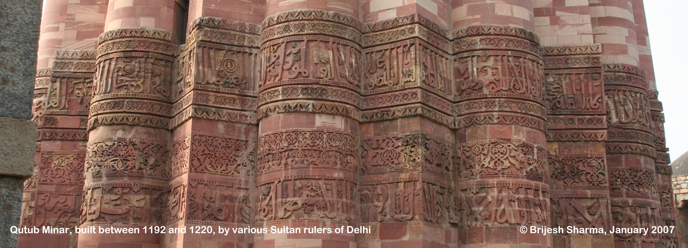
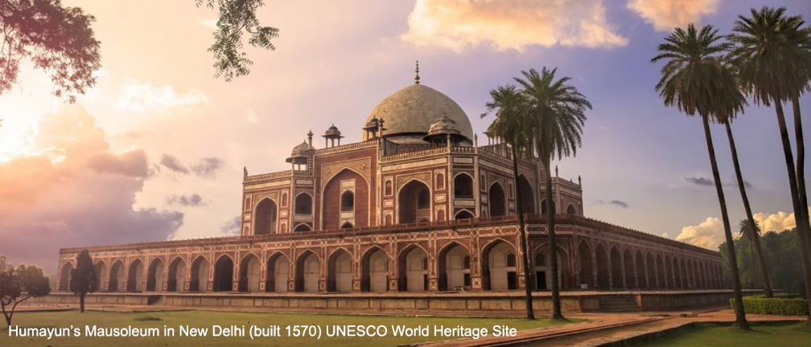
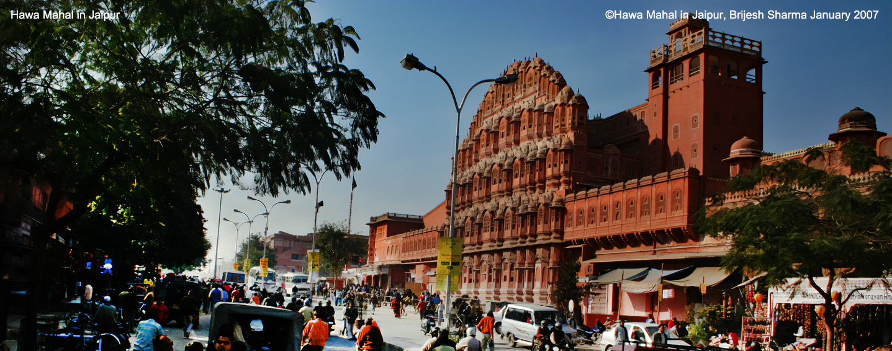
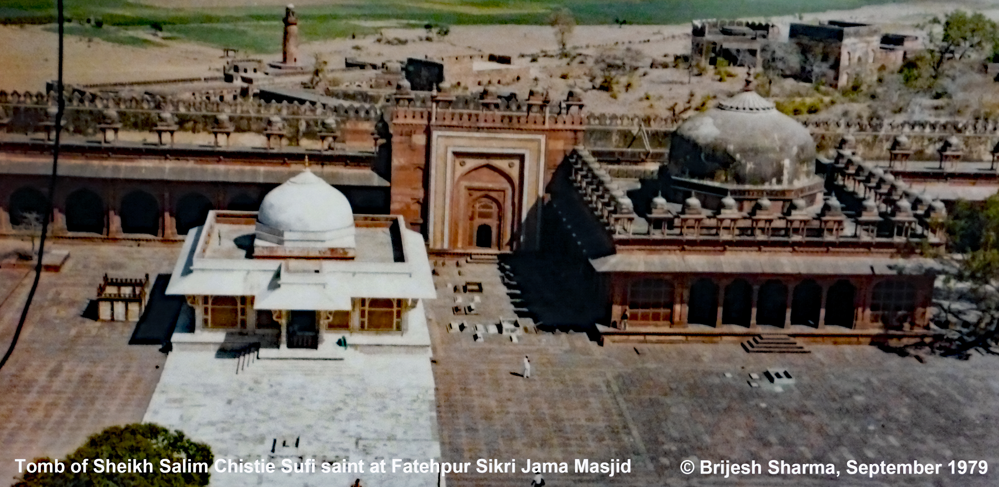

Tiger & Palace of India Tour

This thrilling wildlife adventure in India includes the two best tiger sanctuaries: Bandhavgarh and Kanha National Parks in central India as well as India's most famous 'Keoladeo Ghana Bird Sanctuary’ in Bharatpur at the eastern boundary of Rajasthan. Kanha Tiger Sanctuary offers the views of the landscape and wildlife that inspired Rudyard Kipling to write the famous Jungle Book. The Bandhavgarh and Kanha Sanctuaries are open from November to June and from October to June respectively. The fascinating journey starts in New Delhi and includes Jaipur, Abhineri, Fatehpur Sikri, Agra, Orchha, Khajuraho Bandhavgarh and Kanha. Please feel free to call or email us for other destinations in between this route or other changes to custom plan your own India Adventure.
ITINERARY:
Day 01, US Airport:
Departure
Day 2 DELHI:
Arrive in Indira Gandhi International Airport in New Delhi, traditional Indian welcome with marigold garlands by our representative & transfer to the hotel.
Day 03, New Delhi:
After breakfast sightseeing of Qutub Minar: its construction was initiated by Qutubudin-Aibak in 1198 CE upon becoming the first Sultan of Delhi.Qubub Uddin Aibak was born in Turkestan of ethnic Mamluk descent. This was a region where youth went out to neighboring countries and joined their armies as mercenaries. Often they were enslaved when the army they were fighting with lost. Qutubuddin was sold to the Qazi (Islamic judge) of Nishapur in Persia. There he became favorite of his master because of his skills of horseriding and archery among other warrior abilities. Qazi’s sons were jealous and they sold him after the Qazi’s death. Finally he ended up as slave of Sultan Muhammad of Ghur province of Afghanistan. He led Sultan of Ghur’s army in the 1st and 2nd battle of Tarain and was appointed Governor of Lalkot, the capital of the last Hindu Chauhan dynasty kingdom. When Muhammad of Ghur was assassinated, Qutubuddin bin Aibak declared himself sovereign monarch and started the construction of Qutub Jami Mosque (a.k.a. Quwwat ul Islam Mosque) and Qutub Minar. The construction of minaret did not complete in his lifetime and many later Islamic rulers of various successive dynasties left their mark on this monument, which is now 5 stories high and 73 meters or 240 feet tall. The mosque was constructed using architectural elements of 27 Hindu and Jain temples that were demolished to build it. Much of the decorative pillars and facades of walls in the mosque were used without alteration in the new mosque, only the Arabic verses from the Quran were added new, sculpted by Hindu artisans who did not know the Arabic language and curved the endings of letters as they did with Sanskrit language carvings. In the courtyard of the mosque there is an iron pillar dating from Gupta period (4th century CE) that was a flag post of a Hindu temple. It is made of such an iron alloy that it has not rusted after all these years being exposed to elements of nature. Qutub Minar is a UNESCO World Heritage Site.
Later sightseeing of the Second Mughal Emperor Humayun's Tomb - its architecture may have influenced the construction of the Taj Mahal in Agra. Emperor Humayun died just six months after winning the throne of Delhi in 1556 CE. His widow, Hamida Bano Begum (a.k.a. Haji Begum) supervised its construction under Mughal Emperor Akbar’s rule. Having recently returned from Persia and its architect, Mirak Mirza Ghiyath, being a Persian, the monuments has elements of Persian and Hindu architecture blended in it. Many later Mughal rulers are also buried in this mausoleum. Humayun’s Tomb is a UNESCO World Heritage Site.
Proceed further for sightseeing of India Gate (the war memorial), Parliament House and Presidents House (from outside). The British decided in 1911 to move their capital from Calcutta (now Kolkata) to Delhi. Edwin Landseer Lutyens and his friend Herbert Baker were chosen for designing various buildings in the new capital. In 1914 the First World War started and continued until 1918. During this period the new capital’s construction was halted. Finally after its construction completed, the British capital was moved to New Delhi in 1931. India Gate was originally a monument to honor the fallen Indian soldiers in World War I, but now honors Indian soldiers all subsequent wars.
In the afternoon stop by the Red Fort for photography from outside - the massive sandstone fort built by Shah Jahan on the banks of river Yamuna. The fifth Mughal Emperor Shahjahan moved his capital from Agra to Delhi in 1636 and started the construction of the walled “Shahjahanabad” city with 14 gates. The most important gates, Mori, Lahori, Ajmeri, Turkman, Kashmiri and Delhi Gates still exist along with remnants of the wall. Within the city there were many monuments constructed but the most ambitious project was the Red Fort – according to a horoscope done to determine the auspicious time for starting its construction, the work on building the Red Fort started on May 12, 1639. In the Emperor’s Balcony in Diwan-i-Am or the Hall of Public Audience, there are a set of marble panels that were made in Pietra Dure art by the Florentine jeweler, Austin de Bordeaux. The most famous of these is the one depicting Orpheus playing the flute. There are many other palaces in the fort that were decorated with inlay of semi-precious stones in marble. Red Fort is a UNESCO World Heritage Site.
Jama Masjid - is the largest mosque in India and stands across the road from the Red Fort, built by Mughal Emperor Shahjahan 1648 CE. About 20,000 people can pray here at a time.
Enjoy the thrill of a bicycle rickshaw ride through the narrow lanes of Chandni Chowk - the bazaar was planned by Shahjahan's daughter, Princess Jahanara. Overnight hotel.
Day 04, New Delhi - Jaipur:
After breakfast, drive about 235 kilometers or 146 miles to Jaipur in about 5 hours. Arrive in Jaipur & transfer to the hotel. Relax and enjoy the demonstrations of wooden block textile printing, woolen carpet weaving and cutting & polishing of colored precious stones for jewelry in the afternoon. Overnight in hotel.
Day 05 , Jaipur:
After breakfast drive through the walled pink city to Hawa Mahal, which is mere facade with about 3 feet deep balconies behind stone carved, latticed screens where royal family women used to sit to watch the royal processions on the street in front. After photographing drive further through the pink city to Amber Fort, the ancient capital of Kachwaha Maharajas before Maharaja Sawai Jai Singh designed India’s first planned city in ca. 1727 CE. Enjoy a royal ride on decorated Elephants to the hilltop palaces of Amber Fort. The two main palace complexes in the fort belong to the reigns of Mirza Raja Jai Singh (1621 – 1667 CE) and Maharaja Man Singh (1589 – 1614 CE). Maharaja Man Singh already as a prince was in the service of Mughal Emperors. He established a life-long friendship with Emperor Akbar already in his younger years and was honored as one of the nine “Navratnas” (the 9 Jewels of Emperor’s court). He was governor of Bengal under Emperor Akbar and brought back the idol of Shila Devi that is now in the Kali Temple in Amber Fort. The descendants of the priests who accompanied the idol to Amber still serve in this temple. Mirza Raja Jai Singh served as a courtier and commander under Mughal Emperors Akbar, Jahangir and Shahjahan.
The first palace entering from the Ganesh Pol gate was constructed during his reign and has influence of Mughal architectural style. It is most famous for the flat and convex mirror decorations on its walls and ceilings. After sightseeing descend by Jeeps and return to Jaipur city with stop on the way at Jal Mahal Island Palace for photographing.
In the afternoon visit the City Palace of Jaipur. Sightseeing includes the Royal portraits gallery in the Diwan-i-Am (Hall of Public Audience), the Diwan-i-Khas (Hall of Private Audience) where the famous “Gangajalis” – the silver urns are on display; these urns were used to carry Ganga river water to London when Maharaja Madho Singh II went there for celebrations of the coronation of King Edward VII in 1901; the Mor Chowk (peacock) courtyard of Chandra Mahal, the palace where the present head of the Jaipur royal still resides. One of the gates leading into the courtyard has beautiful sculptures of Peacocks giving it the name of Mayur (Peacock) Chowk.
Stepping out the City Palace through its southern courtyard visit the world famous “Yantra Shala” popularly called Jantar Mantar constructed by Maharaja Sawai Jai Singh II. It is the largest of the five astronomical observatories built by the Maharaja. All but one of its 17 instruments are still functional. It is now a UNESCO World Heritage Site. The “Brihad Samrat Yantra” or the large sundial here is largest in the world and has an accuracy of 2 seconds. Return to hotel for overnight in Jaipur.
Day 06, Jaipur - Chand Baori in Abhineri - Bharatpur:
After breakfast drive to Abhineri village near Dausa for sightseeing of Chand Baori, the world's deepest step-well. After sightseeing drive further to Bharatpur.
In the afternoon visit the Keoladeo Ghana Bird Sanctuary. This is India's most popular bird sanctuary where more 150 different species of domestic birds can be seen throughout the year. In addition in October migratory birds from Europe, Siberia and Central Asia arrive and stay in the sanctuary until March or April. Bharatpur was a princely state ruled by Jat Rajputs until independence of India. The sanctuary was a hunting preserve of the Rajas of Bharatpur during the British colonial period. Apart from birds the sanctuary is also home to blue bull deers, wild boars and pythons. Dinner and overnight in hotel in Bharatpur.
Day 07, Bharatpur - Fatehpur Sikri - Agra :
After breakfast drive further to Fatehpur Sikri, the deserted capital of Mughal Emperor Akbar. Emperor Akbar was an unique ruler in world history to have a vision of uniting the world's religions while in Europe the St. Bartholomew's Day Massacre by a mob of Roman Catholics against the Huguenots, the French Calvinist Protestants in 1572 was being perpetrated. Fatehpur Sikri is now an Unesco World Heritage Site. The emperor lived in this capital for only 14 years to enjoy the company of the Sufi saint Sheikh Salim Chistie, who prophesied that Akbar would have three sons. The architecture of the city was planned to reflect the emperor's liberal views on different religions. The red sandstone for the capital's buildings was quarried from the hill on which it was built. The mausoleum of the Sufi saint is the only building in the capital that is made of white marble. It was also originally constructed with red sandstone but was later renovated using marble. The Sufi saint's tomb white marble and completely Hindu and Jain architecture, is located in the vast courtyard of the Jama Masjid. This capital was deserted for 400 years until beginning of 20th. century when archaeological renovations started that are still continuing. It is now an UNESCO World Heritage Site. After sightseeing drive another one hour to Agra. In the afternoon relax and enjoy the demonstration of Pietra-Dure, the traditional art of inlay of semi-precious stones in white marble done by descendants of artisans who decorated the Taj Mahal. Later be amazed by the light crimson hues of the setting sun on the white marble Taj Mahal. Just relax at the main gate to admire the beauty of the monument to an Emperor's love for his favorite queen. Overnight in hotel.
Day 08, Agra :
Early morning view the world's most famous mausoleum, the Taj Mahal, in the glow of sunrise. Ample time for sightseeing and photography. Arjumand Bano Begum was the granddaughter of Mirza Ghiaz Beg, a Persian noblemen who migrated to Emperor Akbar's court in Fatehpur Sikri in 1578. Mirza Ghiaz's father, Muhammad Sharif Beg, served Shah Tahmasp Safavi of Persia at Khurasan, Yazd and Isfahan. Shah Tahmasp's son, Shah Ismail II, abandoned the liberal political and religious philosophy of his ancestors leaving poets, authors, painters and other liberal courtiers jobless. The origin of Safavids was in the liberal traditions of Sufism. Mirza Ghiaz and his son, Asaf Khan, after arriving in the Mughal court of Fatehpur Sikri from Persia, served Emperors Akbar and Jahangir. Mehrunnisa, the daughter of Mirza Ghias Beg, married the 4th. Mughal Emperor, Jahangir and was in later years virtually the empress of Mughal India under her title of Nur Jahan. Emperor Shahjahan as Prince Khurram married Arjumand, daughter of Asaf Khan and niece of Mehrunissa and honored her with the title of Begum Mumtaj Mahal or the crown of the palace.

In her 18 years of marriage with the emperor, she was never apart from him, accompanying him even on battle field. She was his most trusted advisor. She bore 14 children of whom 4 sons and 3 daughters survived to adult age. The youngest son, Aurangzeb, killed his elder brothers in the battles of succession. Mumtaj Mahal died delivering her 14th. child at Burhanpur in central India in 1630, where they were camped outside a battlefield. Taj Mahal, the grandest mausoleum of the world took 17 years to complete in 1648.
After breakfast sightseeing of Agra Fort. Emperor Akbar moved his capital to Agra from Delhi in 1558 but the construction of the Agra Fort started in 1565. It was built on the ruins of an earlier fort named Badalgarh. The first Mughal Emperor Babur had occupied this fort after his victory in the battle of Panipat in 1526 CE. His son, second Mughal Emperor Humayun was crowned in the old fort of Badalgarh in 1530. With about 4000 laborers and craftsmen toiling for 8 years the fort's construction was completed in 1573. The entire fort was built with narrow flat brick masonry work and laminated with red sandstone from the stone quarry at Sikri village west of Agra. According the Emperor Akbar's official biography written by his trusted friend, Abul Fazl, there were about 5000 buildings in the fort. Some of these buildings were demolished to make way for white marble palaces of Emperor Shahjahan, facing the Yamuna River, on the eastern side of the fort. Most of the buildings in western side were converted in to soldier’s barracks by the British East India Company. The western part of the fort is still occupied by Indian military. Emperor Akbar's style was greatly influenced by the architecture of the states of Gujarat and Bengal. It is also very unique because it reflects Emperor Akbar's tolerant religious philosophy. The best of example of his architecture is visible in the palace popularly called Jahangiri Mahal. In 1666 the great Maratha warrior, Shivaji met with Emperor Aurangzeb but the Mughal Emperor broke his promise and arrested him. He managed to escape in a spectacular manner by hiding in fruit baskets for distribution to poor. The Jat and Maratha ruler occupied Agra Fort in later years. Finally in 1803 the British East India Company captured it and demolished most of its monuments, only about 30 monuments have survived in the south-eastern side of the fort. In 1983 the Agra Fort was declared a UNESCO World Heritage Monument.
Later drive across the Yamuna river to the tomb of “Itmad-ud-Daulah”. Mirza Ghiyas al Din Muhammad Beg was the father of Merh-un-Nisa, who later got the title of Begum Nur Jahan (the light of the universe). She was the 20th. and favorite queen of Emperor Jahangir and paternal aunt of Arjumand Bano, Begum Mumtaj Mahal for whom the Taj Mahal mausoleum was built. In later years of Emperor Jahangir's life, Nur Jahan, declared herself Empress of Mughal India and even had coins minted in her name. Mirza Ghiyas Beg passed away in 1622 followed shortly afterwards by his wife, Asmat Begum.
Nur Jahan personally designed a unique mausoleum for them on the eastern banks of River Yamuna in Agra. She envisioned the mausoleum on the model of a jewelry box. She was the first to use white marble for the entire main building of the tomb. Like all other contemporary Mughal buildings this mausoleum is also made of thin, baked bricks and mortar. The brick surfaces were then laminated with white marble in the interior and the exterior of the mausoleum. It was set in the middle of a Charbagh (a garden divided in 4 equal parts). In the east was the main entrance and on the west there was an entrance from the River Yamuna. In the north and south there were mock gateways for maintaining the symmetry. The mausoleum is very feminine and Persian in its style and decoration reflecting the origin of its architect, the Empress Nur Jahan. Overnight in hotel in Agra.
Day 09, Agra-Orchha-Khajuraho :
After breakfast transfer to train station to board the air-conditioned chair-car compartment of Bhopal Shatabdi Express departing at 8.02 AM and arrive at Jhansi at 10.45 AM. Transfer to hotel in Orchha and later full day sightseeing of the Bundela Fort, which is famous for its Jahangiri Mahal that was built to honor the Mughal Emperor Jahangir. In a palace close to its entrance are some remains of the ancient mural painting that have survived, some are restored. The two Hindu temples most renowned are the Ram Raja Temple and the Laxmi Temple.
The Laxmi Temple has impressive architecture and unique paintings. Raja Vir Singh Deo ji of Orchha ordered the construction of Laxmi Temple around 1622, but due to inadequate maintenance over the years the temple soon began to fall apart and had to be reconstructed by Raja Prithvi Singh in 1793. Laxmi Temple’s interior undoubtedly contains the most exquisite of Orchha’s, wall paintings covering the walls and ceiling of three halls, these murals are vibrant compositions. The Laxmi Temple also shows another group of interesting paintings from history mainly painted during the British era during the first battle of Independence in 1857.
There are paintings showing fights between the British and local forces. After sightseeing in Orchha drive further to Khajuraho for overnight.
Day 10, Khajuraho :
After breakfast full day sightseeing tour of Khajuraho's Hindu and Jain temples. Khajuraho temples were constructed between 950 and 1050 A.D. during the reign of Chandela Rajput Rulers of central India. These temples are considered the "high point" of Indian architectural genius in the medieval period in north India and are UNESCO World Heritage Site. Originally there were 85 temples, of which only 22 still exist. It was only in this century, that they were rediscovered, restored and granted the recognition that they justly deserve. Overnight in hotel.
Day 11, Khajuraho-Bandavgarh :
After breakfast drive about 187 kilometers or 116 miles in 6 hours to Bandhavgarh National Park that is located in Umaria district of Madhya Pradesh. Bandhavgarh was declared as a national park in 1968 when the Maharaja of Rewa handed over the area to the government for the formation of the national sanctuary. The National Park consists of a core area of 105 square kilometers and a buffer area of approximately 400 square kilometers and its topography varies between steep ridges, undulating, forest and open meadows. The white tiger, a rare albino species was first found in the forests of the former princely state of Reva in this region. That Tiger is still preserved in the museum of Maharaja's palace. This national park has the highest tiger population density all over India. There are more than 22 wild mammals and about 250 different species of birds in this reserved forest. On arrival in Bandhavgarh check-in to the hotel. Lunch at the resort hotel. Relax in the resort in the late afternoon. Dinner and overnight in hotel.
Day 12, Bandhavgarh :
Early morning, Jeep safari at the national park for wildlife viewing. After breakfast relax at the resort. Another Jeep Safari Tour in the afternoon. Lunch, dinner and overnight in hotel.
Day 13, Bandhavgarh :
Enjoy two wildlife safari tours in the national park. Lunch, dinner & overnight in hotel.
Day 14, Bandhavgarh-Kanha :
After breakfast drive 250 kilometers or 155 miles to Kanha in about 5 hours. Kanha's Sal Tree and bamboo forests, rolling grasslands and meandering streams stretch over 940 square kilometers in dramatic natural splendor. This is original Kipling country, of which the famous author wrote so vividly in his Jungle Book. The same abundance of wildlife species exists today in Kanha National Park, which forms the core of the Kanha Tiger Reserve created in 1974 under Project Tiger. Apart from the tigers other most talked about animals at Kanha National Park are barasingha deer, bison, gaur, sambhar deer, chital spotted deer, barking deer, black deer, black buck, chousingha, nilgai deer, mouse deer, sloth bear, jackal fox, porcupine, hyena, jungle cat, python, pea fowl, hare, monkey, mongoose, and leopard. For an avid bird watcher Kanha has 175 varieties of birds like storks, teals, pintails, pond herons, egrets, peacock, pea fowl, jungle fowl, spur fowl, partridges, quails, ring doves, spotted parakeets, green pigeons, rock pigeons, cuckoos, papihas, rollers, bee-eater, hoopoes, drongos, warblers, kingfishers, woodpeckers, finches, orioles, owls and fly catchers. On arrival in Kanha check-in to the hotel. Rest of the afternoon is free to relax. Lunch, dinner and overnight in hotel.
Day 15, Kanha :
Early morning, Jeep safari in the national park for wildlife viewing. In the afternoon enjoy another Jeep Safari tour in the sanctuary. Lunch, dinner and overnight in hotel.
Day 16, Kanha-Jabalpur-New Delhi-U.S.A. :
After breakfast relax in hotel or explore the area on your own. After lunch drive in about 3 hours to Jabalpur airport to board the flight to New Delhi. On arrival transfer to hotel for farewell dinner and subsequently transfer to Indira Gandhi International Airport for the return flight to USA.
Day 17, New Delhi - USA :
Most international flights depart after mid-night and arrive in USA on same day.
PRICE (please call or email) with following hotels (other hotels can be discussed also) includes :
| City | 3 or 4-Star Hotel | 5-Star Hotel | NO. OVERNIGHTS |
|---|---|---|---|
| NEW DELHI | City Star/Hari Piarko/Nirmal Mahal/Le Roi | JayPee Siddhartha/ The Surya Hotel | 2 |
| JAPIUR | Nahargarh Haveli/ HR Palace Boutique Hotel/Nahar Singh Haveli | ITC Rajputana | 1 |
| BHARATPUR | The Birder's Inn | Laxmi Vilas Palace | 1 |
| AGRA | Taj Inn/Taj Haveli/Taj Galaxy/Gayatri Residency | Double Tree by Hilton Hotel | 2 |
| KHAJURANO | Isabel Palace Hotel | Syna Heritage Hotel | 1 |
| BANDHAVGAHR | Maati Jungle Lodge Resort | Monsoon Forest | 3 |
| KANHA | Kanha Resort | Camp Dev Vilas | 2 |
| NEW DELHI | Justa, Gurgaon | Atrio Boutique Hotel | Farewell dinner |
THE PRICE INCLUDES FOLLOWING :
- • Traditional welcome with marigold garlands on arrival
- • Arrival/departure transfers using air-conditioned vehicle & English speaking drivers
- • Accommodation on twin or double room sharing basis including breakfast
- • Bicycle rickshaw ride in Old Delhi
- • Elephant ride at Amber Fort near Jaipur
- • Bicycle rickshaw bird watching tour in Keoladeo Ghana Bird Sanctuary
- • 4 Jeep safaris in Bandhavgarh and 2 Jeep safaris in Kanha National Parks
- • All tours by an air-conditioned chauffeur driven vehicle as mentioned in the itinerary
- • 2 bottles of water on coach daily
- • Face masks required for travelers in public areas
- • Face masks required for guides and staff in public areas
- • Hand sanitizer available for travelers and staff
- • Regularly sanitized high-traffic areas
- • Gear and equipment sanitized between use
- • Transportation vehicles regularly sanitized between use
- • Guides and staff required to regularly wash hands
- • Regular temperature control for guides and staff
- • Air conditioned train from Agra to Jhansi
- • Sightseeing tours as per the itinerary
- • English speaking local guides in each city for sightseeing
- • Entrance Fees at the monuments, museums and wildlife sanctuaries
- • One domestic flight from Nagpur to New Delhi (flight time & fare subject to change)
- • Farewell dinner in New Delhi or Gurgaon near airport
- • Tips to drivers, guides and porters at hotels
- • All presently applicable government taxes, toll charges, parking fees and driver's overnight allowances.
EXCLUSIONS :
- • Roundtrip international flight from USA to India
- • Single room occupancy supplement amount
- • Visa for India charges - India tourist visa can be obtained online on the website: indianvisaonline.gov
- • Travel Guard international travel insurance (premium will be conveyed based on age & cost of tour, and is payable by any credit card)
- • Lunches and dinners
- • Any extras like table drinks, telephone calls, any tips, laundry etc or any other items of personal nature
- • Still camera or video camera fees
- • Tips at restaurant \ hotels during meals
PAYMENT :
Payments can be made by personal check in favor of INDIA TRAVELLER or by PAYPAL.
PLEASE NOTE:
All monuments in Jaipur close at 4.30 PM.
Red Fort in Delhi is closed on Mondays.
Taj Mahal in Agra is closed on Fridays.